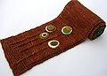
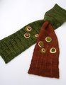

|
||
Premium Patterns Wintry Mix Mitts Love Bytes HawkeyeFree Patterns Kiddie Cadet Summerlin Ruffled Scarf Seamless DS Sock Simply Seamless Pouch Myriads of MushroomsExtras DIY Mitten Blocker Felt Patch Tutorial Yarn Dyeing Tutorial Needle Pouches Knitting Journal |
March 20, 2008 - Posted by Alice SchneblyMake it pop!Project Specs I first fell in love with this pattern when I saw Julie’s version. It’s simple and cute, and I really liked the idea of adding something extra to my knitting with the pops of fabric. This also seemed like a very practical scarf for a Las Vegas; Short and sweet and just the perfect amount of coverage to keep the chill off your neck during the winter months. The pattern originally calls for a fingering weight yarn held doubled. Because the scarf is knit at a gauge of 4.5st/inch, it was easy to substitute a single strand of worsted weight yarn. Of course, being that it is Malabrigo March, I had to choose some super soft Malabrigo Merino Worsted. Once again I couldn’t be happier with this yarn. This is the first time I noticed a difference thickness between colorways though. As you can see I used 6 grams more of Rich Chocolate than Olive, even though I made sure I knit the same number of rows for each side. While knitting the second half of the scarf I could feel that the Olive was a bit thinner. During blocking I had to stretch the Olive side a little more to get it to the same measurements as the Rich Chocolate side. After blocking the differences aren’t noticeable at all so I’m not too concerned with it. The main thing this effects is the calculated yardages—they are probably not totally accurate. I added a couple inches to each side of the scarf as well as to the garter stitch section that goes around the neck. I get a little claustrophobic when things are tight around my neck (I can not wear turtlenecks at all!) and I wanted to be able to wear it a bit looser. After soaking, I blocked the scarf out to 48” rather than 36” that the pattern called for. It’s still a nice and short scarf, and who could argue with an extra foot of Malabrigo? I knew when I started the scarf I was going to use felt for the embellishments. Ever since my local Jo-Ann store started carrying wool and wool blend felt, pretty much every time I go in I use a sale coupon to pick up a yard of a different color. When I went to choose what colors to use for the circles, I really couldn’t decide on just a few so I ended up using four different colors of felt in lots of combinations. When I finished I first thought that it might be a bit too crazy, but I really think it adds that ‘pop’ without being over the top. Overall I am really pleased with how this scarf turned out. It is such a quick project and didn’t drag on like some scarves do! Larissa has another design on her site, Mabel’s Scarf which calls for either one or two skeins of Malabrigo Worsted. It looks fun to knit, and I may have to add this one to my queue as well. I’m also really excited because I ordered Knitalong, a book that is put together by Larissa and her husband. It looks like it will be fantastic, and I’m excited to see some names I recognize from blogland in the list of designers. I love a lot of the designs, especially the Entomology Hat and Mitten Set by the amazing Adrian of Hello Yarn, the Felted Nest, and Olive’s Afghan. The photography looks amazing as well. I can’t wait ‘til my book comes and I can flip through it in person! |
   Recent ReviewsRecent Posts
 Our Favorites
|
| © 2007 KathrynIvy.com | ||
{kind=link}
{kind=link}